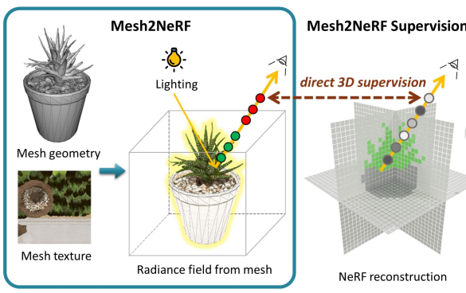

|
Yujin Chen 陈雨劲
I'm a Ph.D. student at the Technical University of Munich, working with Prof. Matthias Nießner in the Visual Computing Lab.
Before that, I received my B.Eng and M.Sc from Wuhan University.
My current research interests lie in 3D reconstruction, 3D generation, scene understanding, neural rendering, motion analysis, and representation learning.
Google Scholar /
Github /
LinkedIn /
Twitter
|

|
|

|
Mesh2NeRF: Direct Mesh Supervision for Neural Radiance Field Representation and Generation
Yujin Chen,
Yinyu Nie,
Benjamin Ummenhofer,
Reiner Birkl,
Michael Paulitsch,
Matthias Müller,
Matthias Nießner
European Conference on Computer Vision (ECCV), 2024
Paper /
Code /
Video /
Project Page
|

|
SSR-2D: Semantic 3D Scene Reconstruction from 2D Images
Junwen Huang,
Alexey Artemov,
Yujin Chen,
Shuaifeng Zhi,
Kai Xu,
MMatthias Nießner
IEEE Transactions on Pattern Analysis and Machine Intelligence (TPAMI), 2024
Paper /
Pdf
|

|
PHRIT: Parametric Hand Representation with Implicit Template
Zhisheng Huang*,
Yujin Chen*,
Di Kang,
Jinlu Zhang,
Zhigang Tu
(* equal contribution)
International Conference on Computer Vision (ICCV), 2023
Paper /
Code
|

|
Consistent 3D Hand Reconstruction in Video via Self-supervised Learning
Zhigang Tu,
Zhisheng Huang,
Yujin Chen†,
Di Kang,
Linchao Bao,
Bisheng Yang,
Junsong Yuan
(† senior authorship)
IEEE Transactions on Pattern Analysis and Machine Intelligence (TPAMI), 2023
Paper /
Pdf /
Code
|

|
4DContrast: Contrastive Learning with Dynamic Correspondences for 3D Scene Understanding
Yujin Chen,
Matthias Nießner,
Angela Dai
European Conference on Computer Vision (ECCV), 2022
Paper /
Video /
Project Page
|

|
MixSTE: Seq2seq Mixed Spatio-Temporal Encoder for 3D Human Pose Estimation in Video
Jinlu Zhang,
Zhigang Tu,
Jianyu Yang,
Yujin Chen,
Junsong Yuan
Conference on Computer Vision and Pattern Recognition (CVPR), 2022
Paper /
Video /
Code
|

|
Model-based 3D Hand Reconstruction via Self-Supervised Learning
Yujin Chen,
Zhigang Tu,
Di Kang
Linchao Bao,
Ying Zhang,
Xuefei Zhe,
Ruizhi Chen,
Junsong Yuan
Conference on Computer Vision and Pattern Recognition (CVPR), 2021
Paper /
Code /
Video /
Project Page
|

|
I2UV-HandNet: Image-to-UV Prediction Network for Accurate and High-fidelity 3D Hand Mesh Modeling
Ping Chen,
Yujin Chen,
Dong Yang,
Fangyin Wu,
Qin Li,
Qingpei Xia,
Yong Tan
International Conference on Computer Vision (ICCV), 2021
Paper
|

|
Joint Hand-Object 3D Reconstruction from a Single Image with Cross-branch Feature Fusion
Yujin Chen,
Zhigang Tu,
Di Kang,
Linchao Bao,
Ruizhi Chen,
Zhengyou Zhang,
Junsong Yuan
IEEE Transactions on Image Processing (TIP), 2021
Paper /
arXiv
|

|
SO-HandNet: Self-Organizing Network for 3D Hand Pose Estimation with Semi-supervised Learning
Yujin Chen,
Zhigang Tu,
Liuhao Ge,
Dejun Zhang,
Ruizhi Chen,
Junsong Yuan
International Conference on Computer Vision (ICCV), 2019
Paper /
Code
|
|
Experiences
Postgraduate Researcher, TU Munich, Advisors: Prof. Matthias Nießner, Jul. 2021 ~ present
Research Intern, Tencent AI Lab, Mentors: Dr. Linchao Bao and Dr. Di Kang, Dec. 2019 ~ Jun. 2021
Visiting Researcher, State University of New York at Buffalo, Advisor: Prof. Junsong Yuan, Jul. 2019 ~ Nov. 2019
Research Assistant, Wuhan University, Advisor: Prof. Ruizhi Chen and Prof. Zhigang Tu, Sep. 2018 ~ Jun. 2021
|
|
Services
Teaching
Introduction to Deep Learning (IN2346), Head-Teaching Assistant (more than 1000 students), Winter 2022 & Summer 2023 & Winter 2023 & Summer 2024
Machine Learning for 3D Geometry (IN2392), Teaching Assistant, Summer 2022
Advanced Deep Learning for Computer Vision: Visual Computing (IN2390), Teaching Assistant, Winter 2021
Reviewing
CVPR, ECCV, ICCV, TPAMI, IJCV, TIP
|
|
Contact Information
Address: Technical University of Munich, Department of Informatics, Boltzmannstraße 3, 85748 Garching
Room: 02.07.041
Email: yujin.chen@tum.de
|
|
{kind=link}